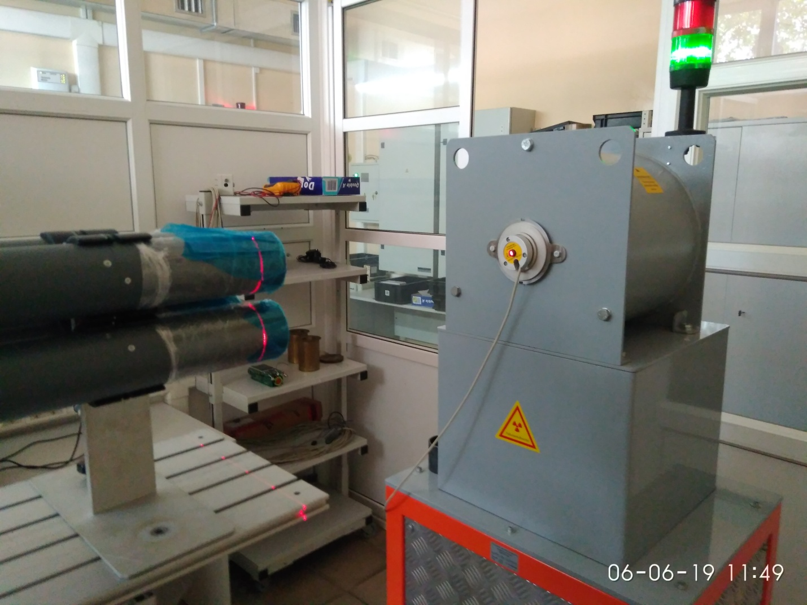
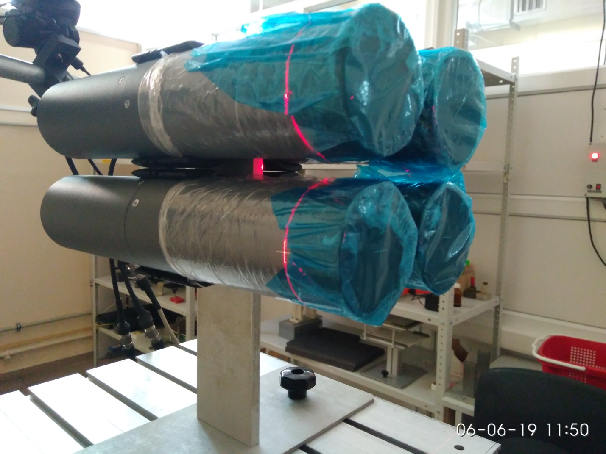
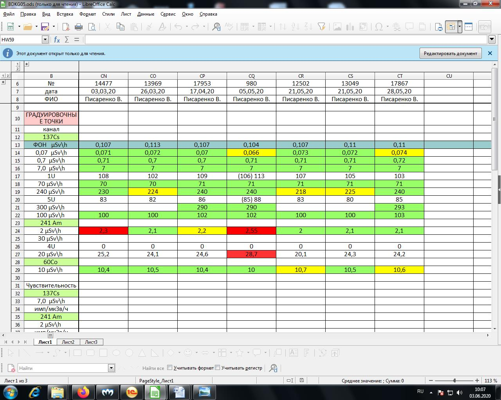

Градуировка БДКГ-05
- Установить 4 блока детектирования на УДГ-АТ110 таким образом, чтобы они расположились параллельно оси излучения, ось пересекала через кольцевые риски, а расстояние от источника до центра детектора было выставлено -23 мм от торца (метка) блоков  
- Подключить к ПК
- Запустить ПО Bdkg03,05,11
- Нажать Поиск
- Выбрать бд
- Нажать ПСИ
- Начать измерения
- Установить источник 137Cs 7 мкЗв/ч
- Градуировать показания выставив коэф 3U≈100
- Выставить точку Am 30 мкЗв/ч скорректировать показания коэф 4U (д.б. СДН 180, Китай 0)
- Выставить точку Cs 240 мкЗв/ч скорректировать показания коэф 5U (д.б. СДН 0, Китай 85)
- Перепроверить Am 30 мкЗв/ч при необходимости скорректировать из-за совместного влияния 4U и 5U
- Снять точку Am 2 мкЗв/ч
- Проверить 60Со 10 мкЗв/ч
- Снять ПСИ по Cs в точках 0,07 мк, 0,7 мк, 70 мк и 300 мкЗв/ч
- Данные переписать в журнал градуировки 